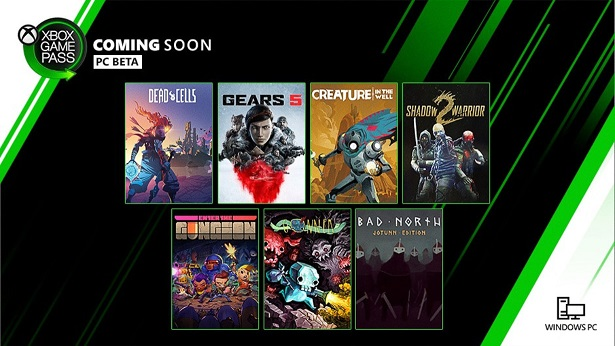
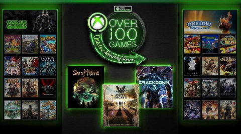
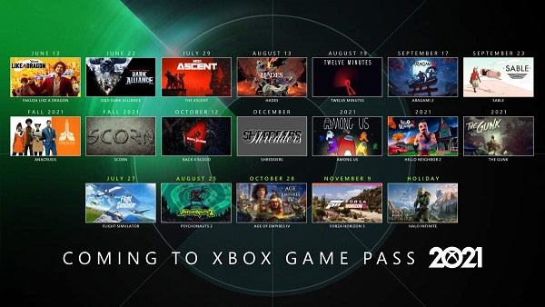

Controlador de Xbox 360 El Controlador de Xbox 360 (en inglés: Xbox 360 Controller) es el principal controlador o joystick de la consola Xbox 360 de Microsoft. El mismo tiene dos versiones, con cable o inalámbrico y ambos son compatibles con la PC. Los joysticks originales de la Xbox no son compatibles con la Xbox 360.
El mando elite mantiene el diseño del mando original para Xbox ONE fue anunciado en la E3 2015 e incorpora novedades respecto a la versión básica enfocadas al mundo de gaming profesional. Entre sus principales características y novedades se encuentran: Palancas intercambiables: El mando incluye 4 palancas intercambiables en la parte trasera que permiten mayor número de acciones sin necesidad de hacer combinaciones de botones. Joysticks intercambiables: Pensados en adaptarse a las manos de cualquier jugador así como sus necesidades y estilo de juego, el mando incluye un total de 6 joysticks de metal (2 estándar, 2 largos, y 2 curvos).
Crucetas intercambiables: El mando incluye 2 crucetas intercambiables (1 en facetas y 1 estándar). Bloqueo de gatillos: El bloqueo de gatillos de alta sensibilidad permite mayor velocidad de disparo. Personalización ilimitada: El mando da la posibilidad de editar con total libertad las acciones que realiza cada botón a nuestro gusto, todo esto desde la aplicación de accesorios.
Kinect para Xbox 360, o simplemente Kinect (originalmente conocido por el nombre en clave «Project Natal»),24 es «un controlador de juego libre y entretenimiento» creado por Alex Kipman, desarrollado por Microsoft para la videoconsola Xbox 360, y desde junio del 2011 para PC a través de Windows 7 y Windows 8.25 Kinect permite a los usuarios controlar e interactuar con la consola sin necesidad de tener contacto físico con un controlador de videojuegos tradicional, mediante una interfaz natural de usuario que reconoce gestos, comandos de voz,26 y objetos e imágenes. El dispositivo tiene como objetivo primordial aumentar el uso de la Xbox 360, más allá de la base de jugadores que posee en la actualidad.27 En sí, Kinect compite con los sistemas Wiimote con Wii MotionPlus y PlayStation Move, que también controlan el movimiento para las consolas Wii y PlayStation 3, respectivamente.
